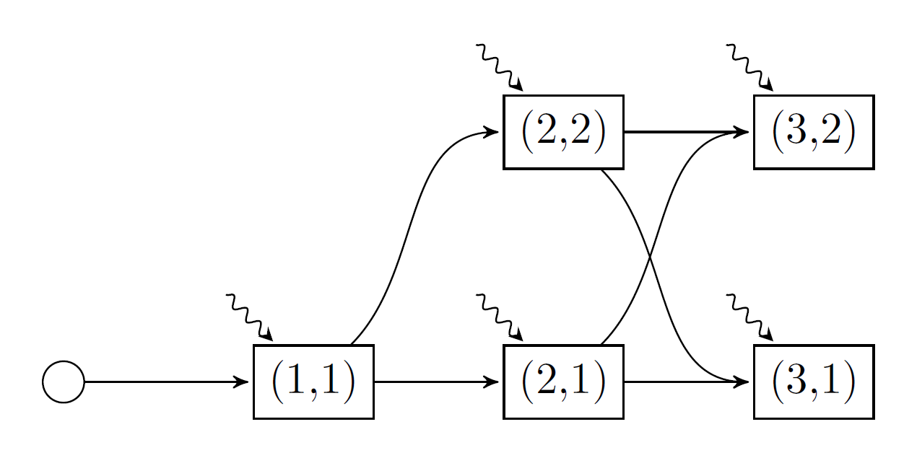

Markovian policy graphs
This tutorial was generated using Literate.jl. Download the source as a .jl file. Download the source as a .ipynb file.
In our previous tutorials (An introduction to SDDP.jl and Uncertainty in the objective function), we formulated a simple hydrothermal scheduling problem with stagewise-independent random variables in the right-hand side of the constraints and in the objective function. Now, in this tutorial, we introduce some stagewise-dependent uncertainty using a Markov chain.
Formulating the problem
In this tutorial we consider a Markov chain with two climate states: wet and dry. Each Markov state is associated with an integer, in this case the wet climate state is Markov state 1 and the dry climate state is Markov state 2. In the wet climate state, the probability of the high inflow increases to 50%, and the probability of the low inflow decreases to 1/6. In the dry climate state, the converse happens. There is also persistence in the climate state: the probability of remaining in the current state is 75%, and the probability of transitioning to the other climate state is 25%. We assume that the first stage starts in the wet climate state.
Here is a picture of the model we're going to implement.

There are five nodes in our graph. Each node is named by a tuple (t, i), where t is the stage for t=1,2,3, and i is the Markov state for i=1,2. As before, the wavy lines denote the stagewise-independent random variable.
For each stage, we need to provide a Markov transition matrix. This is an MxN matrix, where the element A[i, j] gives the probability of transitioning from Markov state i in the previous stage to Markov state j in the current stage. The first stage is special because we assume there is a "zero'th" stage which has one Markov state (the round node in the graph above). Furthermore, the number of columns in the transition matrix of a stage (i.e. the number of Markov states) must equal the number of rows in the next stage's transition matrix. For our example, the vector of Markov transition matrices is given by:
T = Array{Float64,2}[[1.0]', [0.75 0.25], [0.75 0.25; 0.25 0.75]]3-element Vector{Matrix{Float64}}:
[1.0;;]
[0.75 0.25]
[0.75 0.25; 0.25 0.75]Make sure to add the ' after the first transition matrix so Julia can distinguish between a vector and a matrix.
Creating a model
using SDDP, HiGHSΩ = [ (inflow = 0.0, fuel_multiplier = 1.5), (inflow = 50.0, fuel_multiplier = 1.0), (inflow = 100.0, fuel_multiplier = 0.75),]model = SDDP.MarkovianPolicyGraph(; transition_matrices = Array{Float64,2}[ [1.0]', [0.75 0.25], [0.75 0.25; 0.25 0.75], ], sense = :Min, lower_bound = 0.0, optimizer = HiGHS.Optimizer,) do subproblem, node # Unpack the stage and Markov index. t, markov_state = node # Define the state variable. @variable(subproblem, 0 <= volume <= 200, SDDP.State, initial_value = 200) # Define the control variables. @variables(subproblem, begin thermal_generation >= 0 hydro_generation >= 0 hydro_spill >= 0 inflow end) # Define the constraints @constraints( subproblem, begin volume.out == volume.in + inflow - hydro_generation - hydro_spill thermal_generation + hydro_generation == 150.0 end ) # Note how we can use `markov_state` to dispatch an `if` statement. probability = if markov_state == 1 # wet climate state [1 / 6, 1 / 3, 1 / 2] else # dry climate state [1 / 2, 1 / 3, 1 / 6] end fuel_cost = [50.0, 100.0, 150.0] SDDP.parameterize(subproblem, Ω, probability) do ω fix(inflow, ω.inflow) @stageobjective( subproblem, ω.fuel_multiplier * fuel_cost[t] * thermal_generation ) endendA policy graph with 5 nodes.
Node indices: (1, 1), (2, 1), (2, 2), (3, 1), (3, 2)
For more information on SDDP.MarkovianPolicyGraphs, read How to create a general policy graph.
Here's the graph:
# We need `open = false` to build the documentation. Remove if running locally.SDDP.plot(model, "model_markov.html"; open = false)Training and simulating the policy
As in the previous three tutorials, we train the policy:
SDDP.train(model)-------------------------------------------------------------------
SDDP.jl (c) Oscar Dowson and contributors, 2017-26
-------------------------------------------------------------------
problem
nodes : 5
state variables : 1
scenarios : 1.08000e+02
existing cuts : false
options
solver : serial mode
risk measure : SDDP.Expectation()
sampling scheme : SDDP.InSampleMonteCarlo
subproblem structure
VariableRef : [7, 7]
AffExpr in MOI.EqualTo{Float64} : [2, 2]
VariableRef in MOI.GreaterThan{Float64} : [5, 5]
VariableRef in MOI.LessThan{Float64} : [1, 2]
numerical stability report
matrix range [1e+00, 1e+00]
objective range [1e+00, 2e+02]
bounds range [2e+02, 2e+02]
rhs range [2e+02, 2e+02]
-------------------------------------------------------------------
iteration simulation bound time (s) solves pid
-------------------------------------------------------------------
1 3.750000e+04 1.991887e+03 1.131190e+00 18 1
40 5.000000e+03 8.072917e+03 1.380984e+00 1320 1
-------------------------------------------------------------------
status : simulation_stopping
total time (s) : 1.380984e+00
total solves : 1320
best bound : 8.072917e+03
numeric issues : 0
-------------------------------------------------------------------Instead of performing a Monte Carlo simulation like the previous tutorials, we may want to simulate one particular sequence of noise realizations. This historical simulation can also be conducted by passing a SDDP.Historical sampling scheme to the sampling_scheme keyword of the SDDP.simulate function.
We can confirm that the historical sequence of nodes was visited by querying the :node_index key of the simulation results.
simulations = SDDP.simulate( model; sampling_scheme = SDDP.Historical([ ((1, 1), Ω[1]), ((2, 2), Ω[3]), ((3, 1), Ω[2]), ]),)[stage[:node_index] for stage in simulations[1]]3-element Vector{Tuple{Int64, Int64}}:
(1, 1)
(2, 2)
(3, 1)